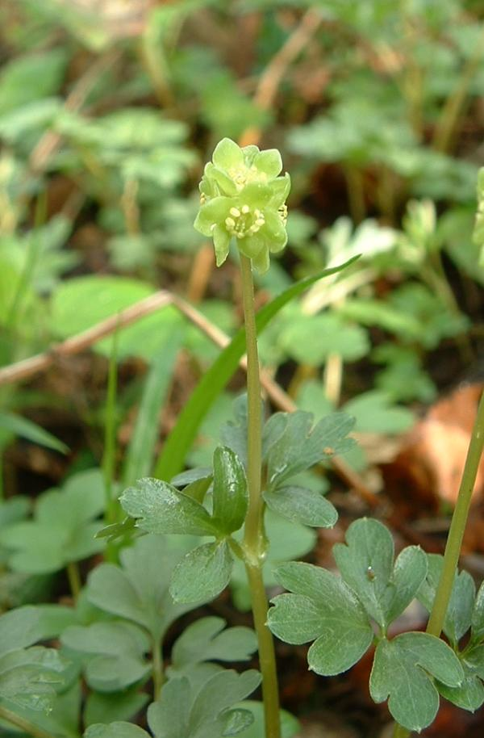
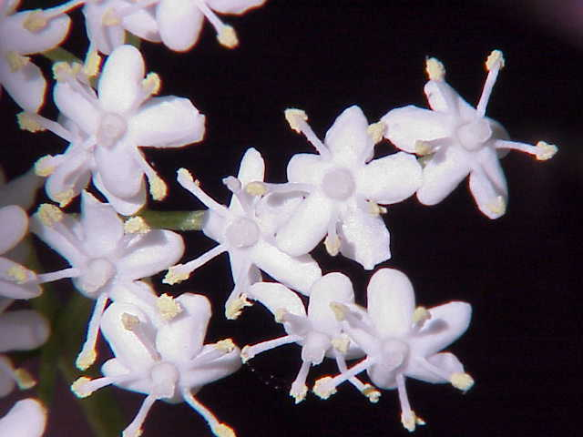
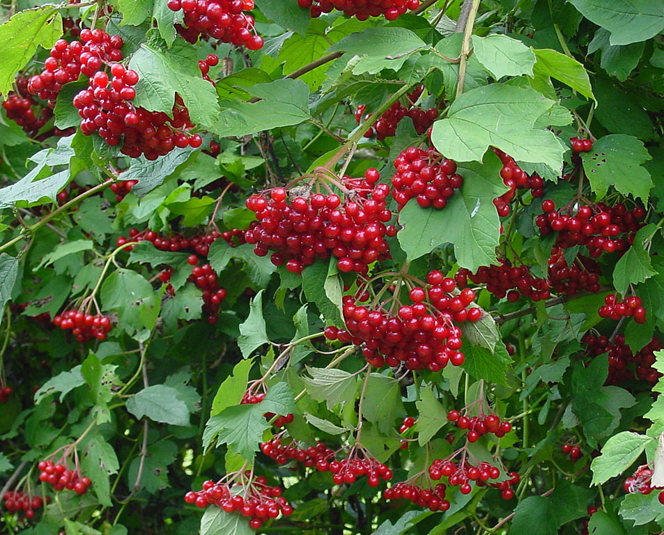

Adoxaceae
moschatel family
|  Adoxa moschatellina (moschatel) from Wikimedia Commons by Jeffdelonge, CC BY-SA 3.0 |
 Sambucus niger (elder) from Wikimedia Commons by Kurt Stüber, CC BY-SA 3.0 |
Viburnum grandiflorum from Wikimedia Commons by J.M.Garg - Own work, CC BY 3.0 |
 Viburnum opulus (crampbark) from Wikimedia Commons by Wouter Hagens - Own work, Public Domain |
{kind=link}
{kind=link}
{kind=link}
{kind=link}
botanical characteristics
Botany in a Day, p. 176 | "Adoxaceae", Wikipedia
- growth form
- range from small herbaceaus plants to shrubs to small trees (e.g., elder)
- stems/leaves
- pithy stems (looks like styrofoam in the core)
- opposite leaves with toothed margins
- flowers
- bisexual flowers
- 5 sepals, usually united, sometimes very small (rarely 4)
- 5 united petals
- reproductive structures
- usually 5 stamens (sometimes 4)
- ovary is positioned inferior with 2, 3, 5, or 8 united carpels with or without partition walls
- fruit matures as a drupe
- unlike members of Capriofolaceae, Adoxaceae plants do not usually have flowers/fruits in pairs
distribution
"Adoxaceae", Wikipedia | "Adoxa", Wikipedia | "Sambucus", Wikipedia | "Viburnum", Wikipedia
- 5 genera and 150-200 species worldwide
- most species are native to the northern hemisphere, ranging from North America to Europe to China
- mostly boreal to temperate and sub-tropical climates
- limited range in the Southern Hemisphere
ecological roles
"Adoxaceae: The Elderberry Family", Floral Prisms
- elders and viburnums provide food for birds and some butterfly species
- wildlife consume nannyberry viburnum (Viburnum lentago) fruit during the winter across the northern United States and southern Canada, and the mapleleaf viburnum (V. acerifolium) appeals to butterflies, bees, birds, and various mammals
common pharmacological constituents
- does not appear to be a family that is well-defined by common secondary metabolites
"Selected Metabolites of Biofunctional Importance from Edible Fruits of Forest Shrubs", National Center for Biotechnology Information
- fruits of some Adoxaceae plants are valuable sources of antioxidants, polyphenols, flavonoids, and phenolic acids
- Adoxaceae plants studied here were only Viburnum opulus and Sambucus nigra
"Angiosperm families - Sambucaceae Link.", DELTA
- cyanogenic, or not cyanogenic (in different species); arbutin absent; iridoids detected; ‘Route I’ type (normal and seco); proanthocyanidins absent; flavonols present; kaempferol and quercetin; ellagic acid absent; ursolic acid present
patterns in medicinal actions
- perhaps following from the lack of strong patterns in pharmacological constituents, there does not appear to be strong patterns in medicinal uses of Adoxaceae plants
traditional/cultural uses
"Sambucus", Wikipedia
- folklore related to elder trees is extensive and can vary according to region
- in some traditions, the elder tree is thought to ward off evil and give protection from witches, while other beliefs say that witches often congregate under the plant, especially when it is full of fruit
- if an elder tree was cut down, a spirit known as the Elder Mother would be released and take her revenge; the tree could only safely be cut while chanting a rhyme to the Elder Mother
- Romani people believe burning elder wood brings bad luck.
"Viburnum opulus", Wikipedia
- mentions of Viburnum opulus can be found throughout Ukrainian folklore such as songs, decorative art, Ukrainian embroidery, and poetry
- associated with the birth of the Universe, the so-called 'fire trinity': the sun, the moon, and the star
- its berries symbolize one's home and native land, blood, and family roots
- also represents the beauty of a young lady
warnings
"Sambucus", Wikipedia | "Viburnum", Wikipedia
- some fruits are edible while others are mildly poisonous
- risk of toxicity lowers when fruits are dried or cooked
extra information
"Adoxaceae", Wikipedia
- in older classifications, this entire family was part of Caprifoliaceae, the honeysuckle family
- Adoxa (moschatel) was the first plant to be moved to this new group; later, the genera Sambucus (elders) and Viburnum were added after morphological analysis
prominent genera
- Adoxa (incl. moschatel)
- Sambucus (elders)
- Viburnum (incl. crampbark)
plant highlights
see list of materia medica entries here
sources
"Adoxa" on Wikipedia. Retrieved 3 July 2025.
"Adoxaceae" on Wikipedia. Retrieved 3 July 2025.
"Adoxaceae: The Elderberry Family" on Floral Prisms. Retrieved 3 July 2025.
"Angiosperm families - Sambucaceae Link." on DELTA - DEscription Language for TAxonomy. Retrieved 16 August 2025.
Elpel, Thomas J. Botany in a Day: The Patterns Method of Plant Identification (2021)
Goldberg Blackthorn, Samantha. Ace of Cups Herbal Medicine and Botanical Magic Herbal School (2024)
"Sambucus" on Wikipedia. Retrieved 3 July 2025.
"Selected Metabolites of Biofunctional Importance from Edible Fruits of Forest Shrubs" on National Center for Biotechnology Information. Retrieved 3 July 2025.
"Viburnum" on Wikipedia. Retrieved 3 July 2025.
"Viburnum opulus" on Wikipedia. Retrieved 3 July 2025.